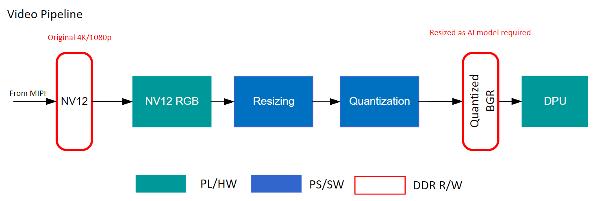
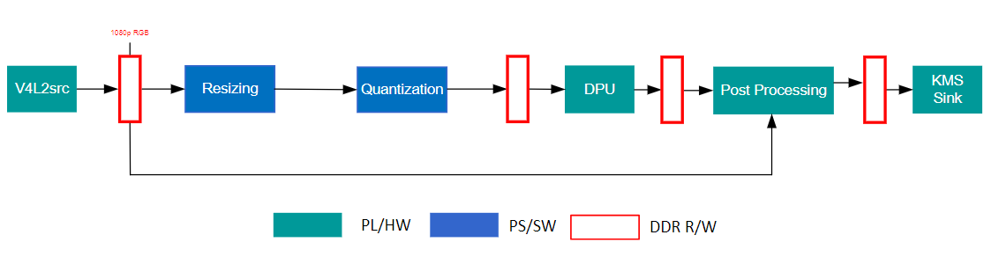

Kria™ KV260 Vision AI Starter Kit NLP SmartVision Tutorial |
Software Architecture of the Accelerator |
Software Architecture of the Accelerator¶
Introduction¶
This document describes the software architecture of the NLP SmartVision accelerator application.
Software Platform and Dependencies¶
We leverage the OpenCV multi-media orchestration platform for application software development. cv::VideoCapture is used to read from Video capture pipeline. the captured buffer is sent to DPU after the CPU preprocssing. The DPU returns meta data and CPU handels postprocessing to render the output buffer. cv::VideoWrite sends the buffer to KMS Sink to display it on the DP/HDMI monitor.
ARM CMSIS for implementing Keyword spotting.
Vitis AI 2.5.0 is the core underlying component to access the AI inference capability provides by Xilinx DPU.
Video Pipeline¶

Overall video data flow
NLP SmartVision Accelerated Application supports live audio, video inputs from USB Microphone and MIPI respectively.
MIPI source will output the frames with NV12 format which in turn are processed to BGR frames by VPSS.

Gstreamer pipeline of the application
Three AI tasks are supported: Facedetect, Objectdetect, Platedetect.
Additional GStreamer component used¶
Next Steps¶
Go back to the KV260 SOM NLP SmartVision design start page
References¶
License¶
Licensed under the Apache License, Version 2.0 (the “License”); you may not use this file except in compliance with the License.
You may obtain a copy of the License at http://www.apache.org/licenses/LICENSE-2.0
Unless required by applicable law or agreed to in writing, software distributed under the License is distributed on an “AS IS” BASIS, WITHOUT WARRANTIES OR CONDITIONS OF ANY KIND, either express or implied. See the License for the specific language governing permissions and limitations under the License.
Copyright© 2021 Xilinx